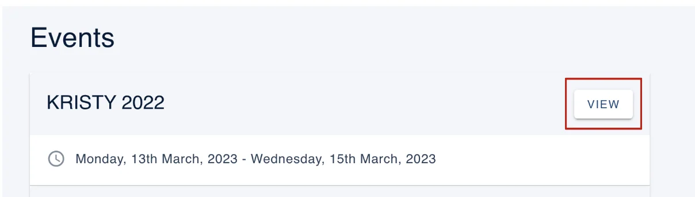
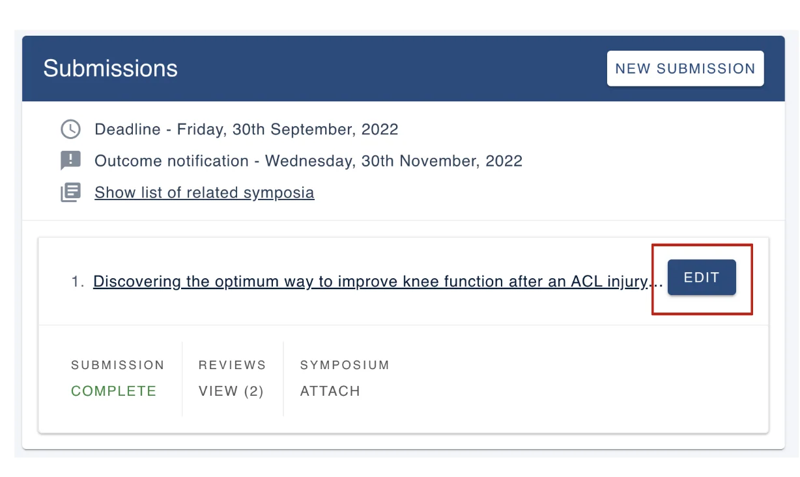
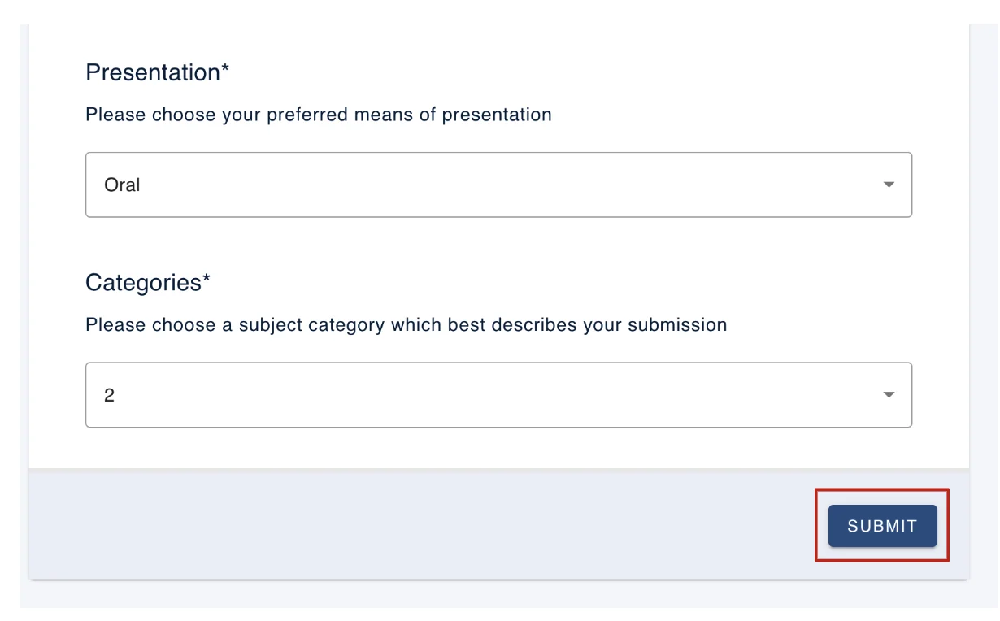
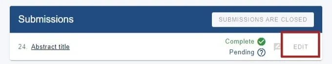

Editing an abstract or submission
For people making a submissionOrganising the event?
If the event settings allow, you can edit your submission, subject to deadlines.#
#
Please note: After you have logged in if you do not see your dashboard or see an error message then you may have logged in with a different email address to the one used to send your submission.
Please ensure you use the same email address and login details that you used when sending your submission.
Go to your event dashboard, click View on the event your submission is associated with.

To edit a submission you have already made, click on Edit (on your personal dashboard).
You can edit any submission, even if it is complete, subject to deadlines and settings.

Make the changes required to your submission, scroll down to the bottom of the form, and then click on Submit (bottom right of the form).

If submissions are closed, Edit will be greyed out, and clicking on the title link will direct you to a read only version of your submission.

If the event admin has enabled the automatic emails, you will receive an email notification that you have edited your submission.
Should you require any further assistance, please contact our support desk via our Contact Form.
Did this page solve it?
Thanks — this helps us fix it.